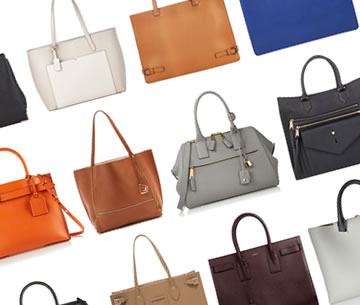
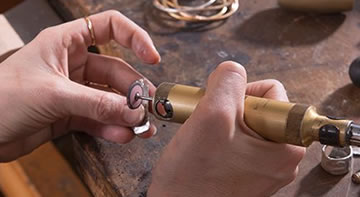
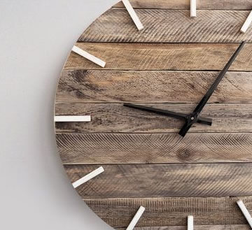

<div class="esperienza-content" ng-init="wowInit({boxClasses:'esperienza-content wow'})">
	<div class="container text-center top-buffer bottom-buffer">
		<div class="row">
			<div class="col-sm-12 clearfix bottom-buffer esperienza-content wow fadeInUpSmall"
				data-wow-delay=".2s">
				<h3 class="title section">
					Cosa facciamo,<br>Semplice: costruiamo borse da donna
					personalizzabili di altissima qualit&agrave;...
				</h3>
				<p>...e le rendiamo economicamente accessibili grazie alla
					ottimizzazione del nostro processo produttivo.</p>
			</div>
		</div>
		<div class="row top-buffer bottom-buffer">
			<div class="col-sm-4 passato bottom-buffer esperienza-content wow fadeInUpSmall"
				data-wow-delay="0.2s">
				<div class="row">
					<div class="col-sm-12">
						<p>
							<b>Non abbiamo negozi</b>: ci affidiamo al web per ricevere gli
							ordini e offrire alle nostri clienti un'esperienza di acquisto
							unica nel suo genere. Ogni ordine va oltre la scelta di un
							modello, poich&egrave; tutte le nostre clienti partecipano al
							design e alla progettazione della borsa che acquisteranno. Il
							nostro configuratore permette di valutare le combinazioni
							pi&ugrave; adatte a rappresentare lo spirito e il carattere della
							futura proprietaria, che prover&agrave; il piacere di possedere
							un pezzo unico, frutto della propria creativit&agrave;.
						</p>
					</div>
					<div class="col-sm-12 top-buffer hidden-xs">
						
					</div>
				</div>
			</div>
			<div class="section-small hidden visible-xs bottom-buffer"></div>
			<div class="col-sm-8">
				<div class="row">
					<div class="col-sm-12 presente bottom-buffer esperienza-content wow fadeInDownSmall"
						data-wow-delay="0.6s">
						<div class="row">
							<div class="col-sm-6 hidden-xs">
								
							</div>
							<div class="col-sm-6">
								<p>
									<b>Poich&egrave; ogni borsa &egrave; diversa dall'altra, la
										produzione avviene just in time</b>. Che cosa significa?
									Cos&igrave; come i piatti in un ristorante di qualit&agrave;
									vengono cucinati espressi, anche le nostre borse iniziano a
									prendere vita a partire da ogni singola "comanda".
								</p>
							</div>
						</div>
					</div>
					<div class="section-small hidden visible-xs bottom-buffer"></div>
					<div class="col-sm-12 futuro esperienza-content wow fadeInRightSmall"
						data-wow-delay="1s">
						<div class="row">
							<div class="col-sm-6">
								<p>
									<b>Questo vuol dire che "ci sar&agrave; da spettare",
										&egrave; vero,</b> ecco perch&egrave; rendiamo bella anche
									l'attesa. Durante il tempo di produzione, infatti, le nostre
									clienti vengono aggiornate periodicamente, ricevendo
									comunicazioni, immagini e video della loro borsa in ogni fase
									di realizzazione.
								</p>
							</div>
							<div class="col-sm-6 hidden-xs">
								
							</div>
						</div>
					</div>
				</div>
			</div>
		</div>
		<div class="section-small hidden visible-xs bottom-buffer"></div>
		<div class="row top-buffer bottom-buffer">
			<div class="col-sm-12 clearfix top-buffer bottom-buffer esperienza-content wow fadeIn"
				data-wow-delay="2s">
				<h3 class="title section citazione">
					&Egrave; un percorso di conoscenza e coinvolgimento<br />che
					permette di apprezzare ancora di pi&ugrave; la qualit&agrave;
					dell'oggetto finito,<br />raccontandone il lavoro, la sapienza e
					la cura dietro ogni dettaglio.
				</h3>
			</div>
		</div>
	</div>
</div>